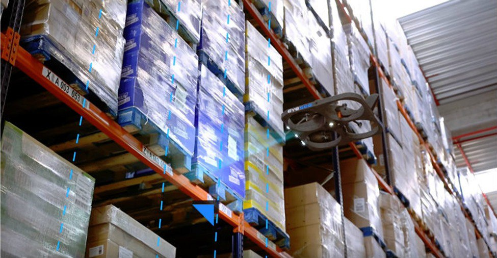
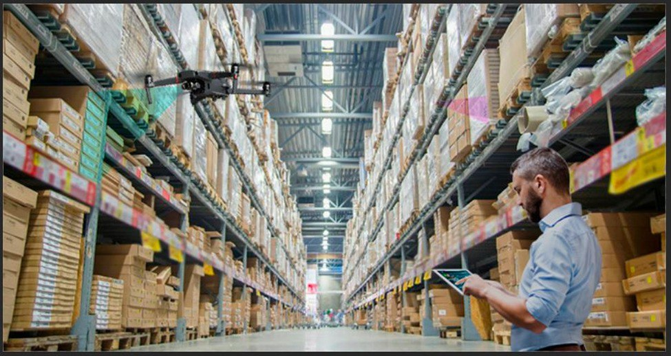
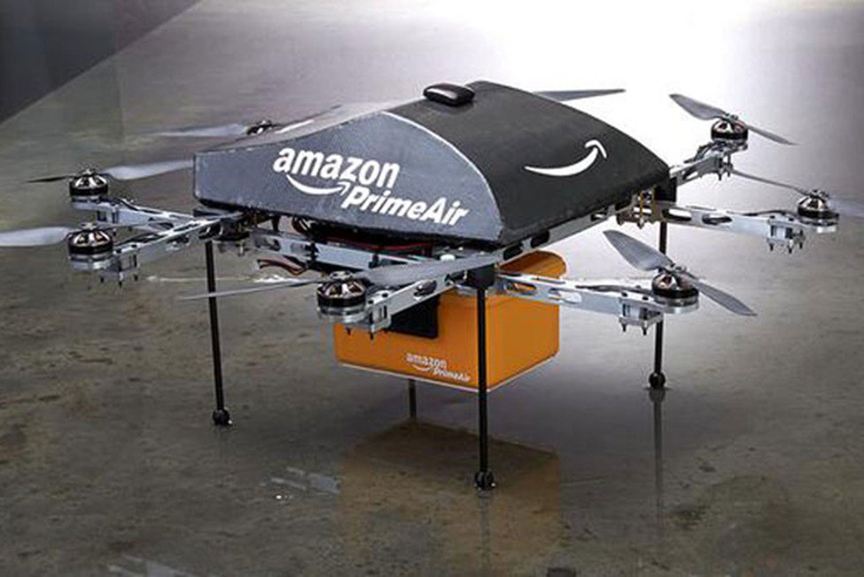
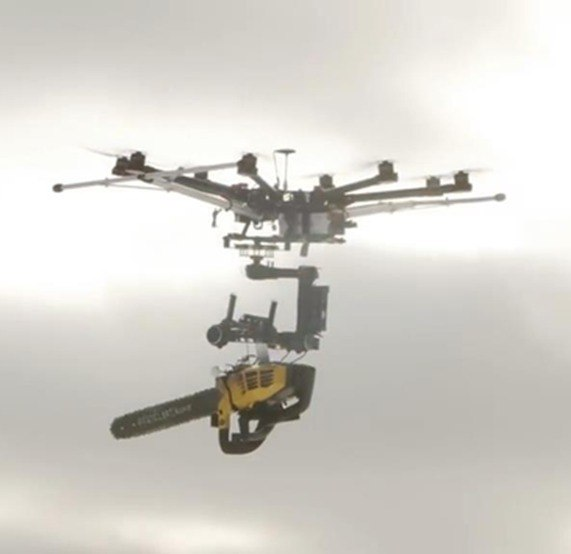
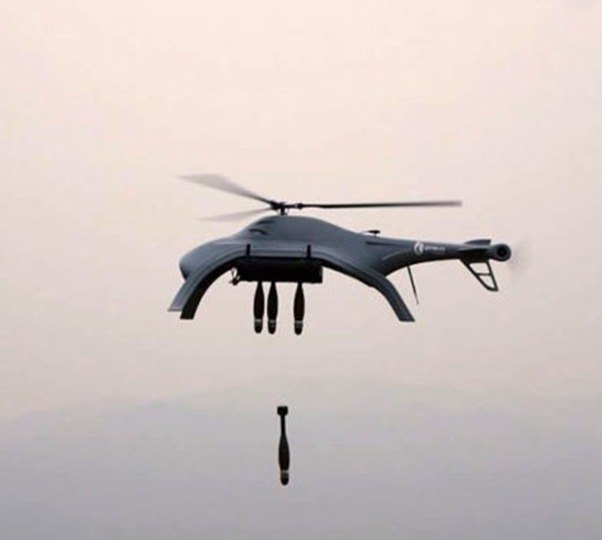
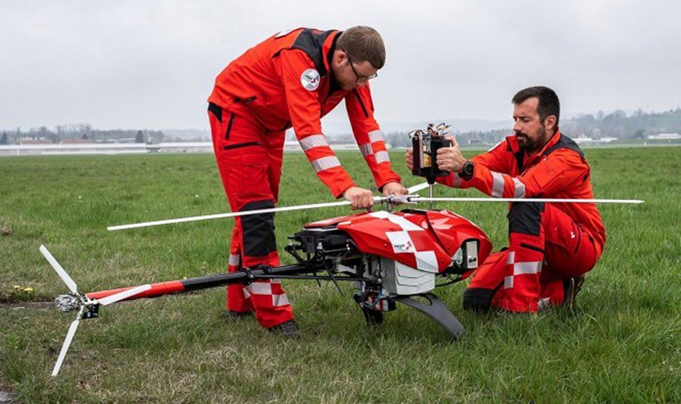
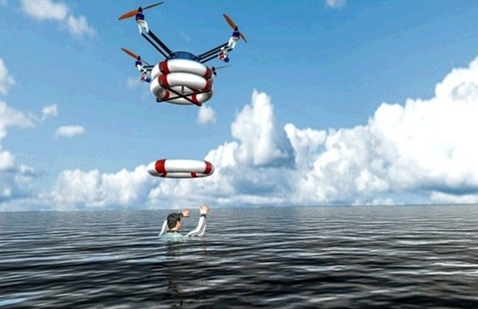

Дрон - в технологическом контексте это беспилотный летательный аппарат.
Беспилотные летательные аппараты в логистике.
Дроны и квадрокоптеры помогают в доставке. Но дроны, прежде всего, являются неотъемлемой частью будущего индустрии доставок и перевозчиков: они помогут доставить ваш товар после того, как вы решите его заказать.
Не все государства могут похвастаться развитием перевозчиков беспилотных авиадоставок. Тем не менее, сфера заказов в мире развивается достаточно активно. Сегодня транспортно-логистические дроны и квадрокоптеры могут беспрепятственно доставлять товары и развивать функционирование логистики:
Доставка пиццы с помощью дронов
А вы знали, что вашу посылку можно заказать по воздуху? Одной из первых компаний, которая начала тестировать доставку пиццы с помощью дрона, была Domino's Pizza. Первый запуск состоялся в Австралии. Причина такого интереса к новым технологиям банальна: конкуренция пиццерий за лидерство по срокам доставки.
Инвентарь на складе

дрон, помогающий на складе во Франции

квадрокоптер на складе лореаля
По мнению многих экспертов, складская логистика является наиболее перспективной сферой для беспилотных летательных аппаратов. И французский бренд L'Oreal прекрасно это доказывает. С помощью специальных дронов они собирают данные обо всех товарах, которые находятся на их складе, в считанные часы. Разве это не будущее?
Доставка лекарств и донорской крови
Для такой серьезной работы используются не менее серьезные беспилотники. Они похожи на самолеты и могут пролететь до 160 км без подзарядки. И запущены они американской компанией Zipline, которая активно развивает это направление доставки в двух африканских странах – Гане и Руанде.
Доставка посылок в розницу
Одной из первых в сфере доставки дронами стала американская компания Amazon, которая начала применять коптеры для транспортировки заказов покупателям. Преимущество такой доставки – в скорости и отсутствии пробок, светофоров. Кроме того, это отличная возможность сократить расходы на работу курьера, ремонт транспорта, топливо. Казалось бы, это инновационное решение является идеальным для работы с негабаритной почтой.

Дрон Амазон
Дрон убийца дронов (или дрон убийца) — расскажем о них.
Они способны перевозить опасные предметы и уничтожать квадрокоптеры.

Дрон убийца

дрон убийца дронов
Спасательные дроны
Здесь им в этом почти нет равных: они способны быстро передвигаясь по воздуху за считаные минуты доставить спасательный круг, необходимый медицинский прибор, отсканировать лес сверху, чтобы найти заблудившегося человека.
поиск человека сверху леса сверху с помощью специальной системы обзора дронами

оперативный медицинский дрон-спасатель, доставляющий оборудование врачам

морской дрон-спасатель
Также В Швейцарии создали дрона с крыльями из воздушного риса, который способен доставлять еду голодающим людям входе спасательных операций.
Обычные дроны, как правило, способны поднять груз весом не более 30% от собственного. У разработки швейцарских этот показатель увеличен до 50%, при этом полезность груза увеличивается за счет съедобных крыльев.